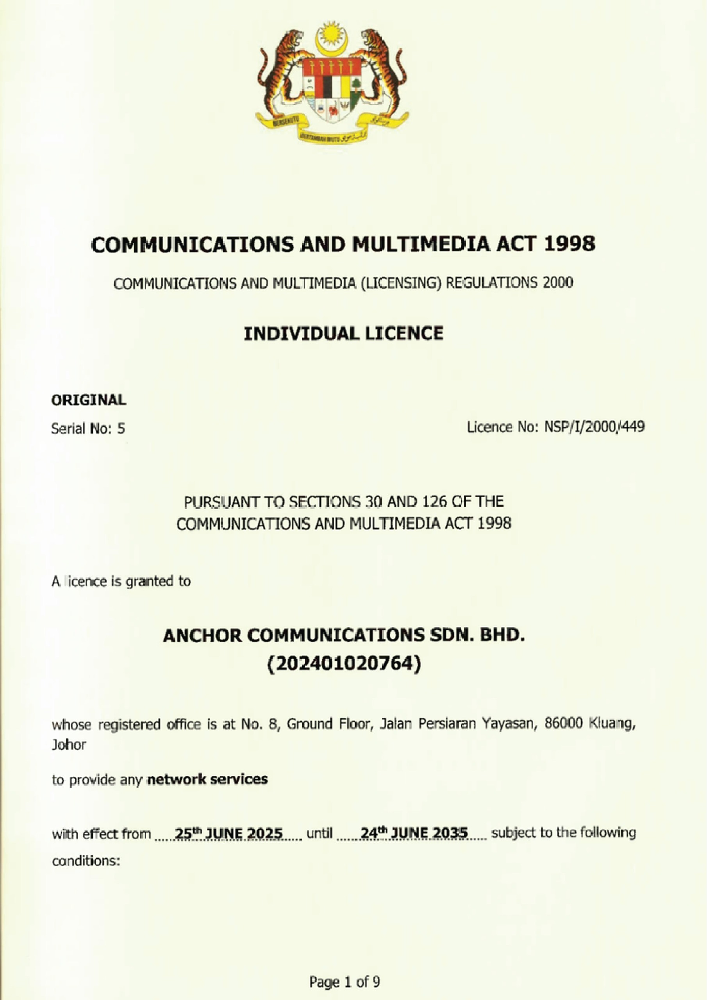
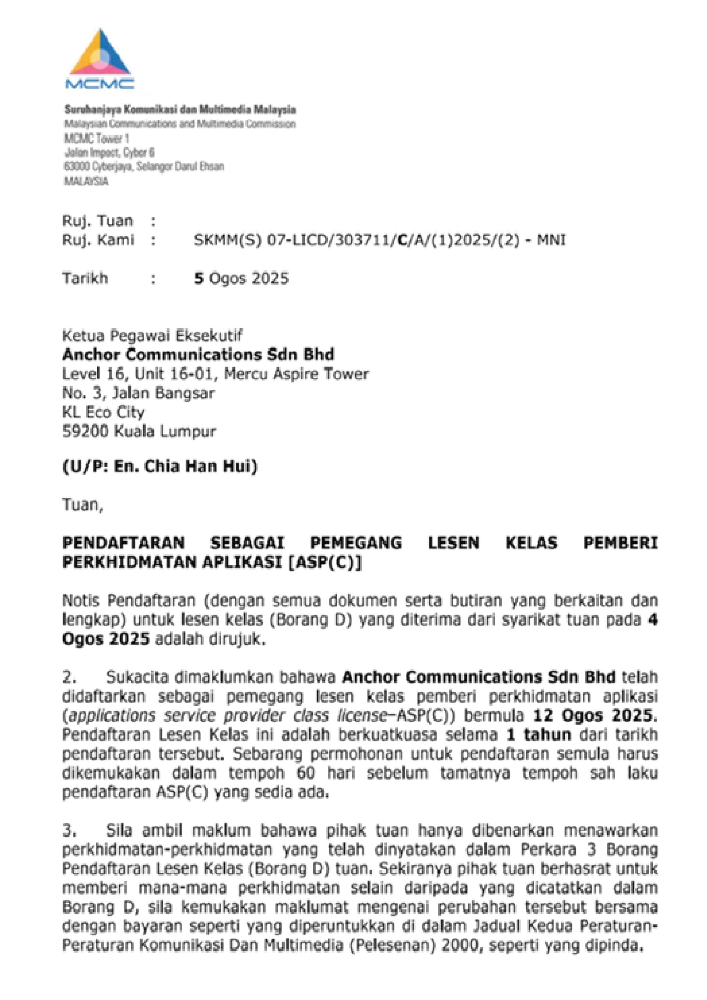
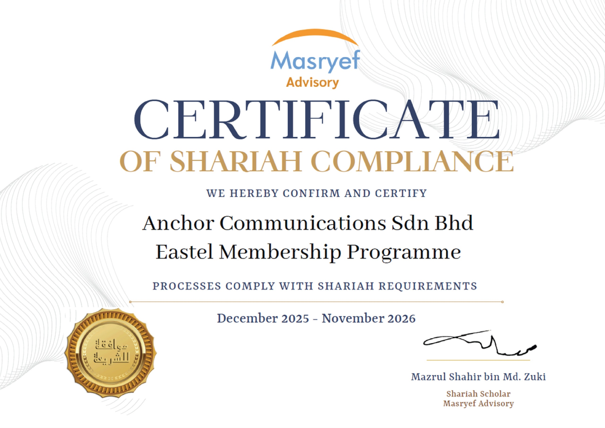
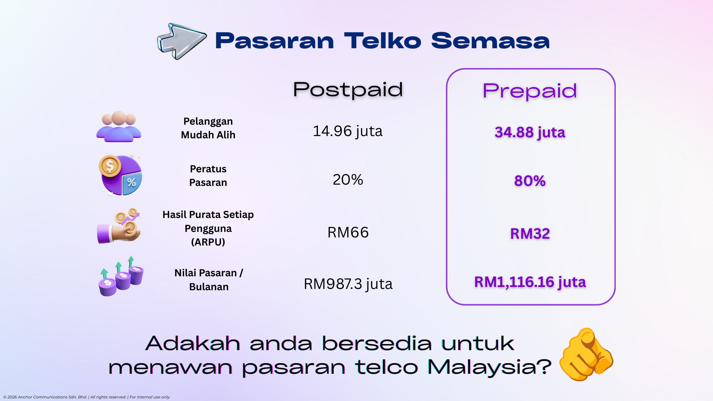
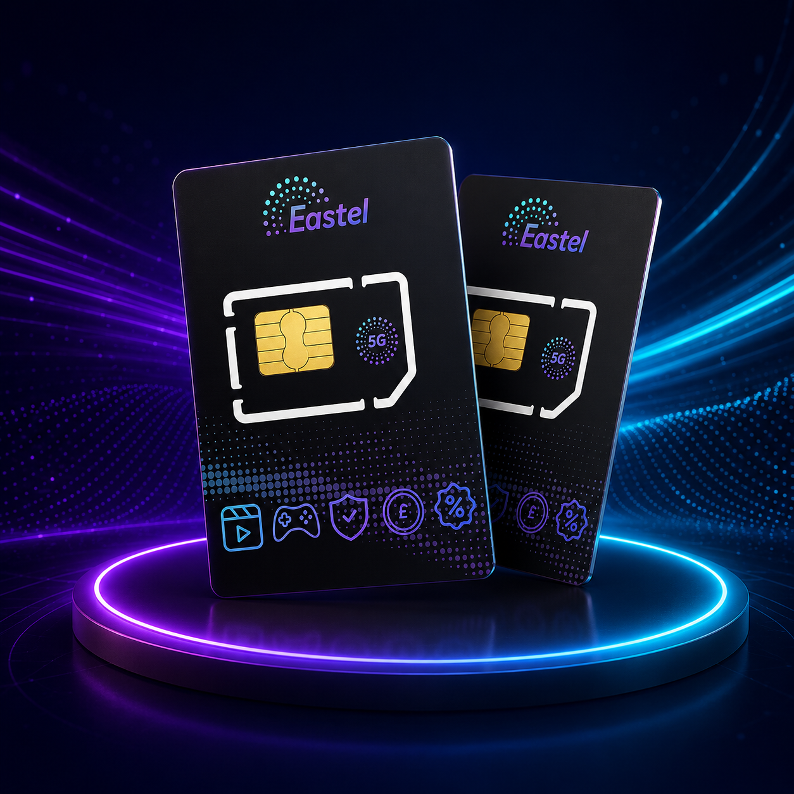
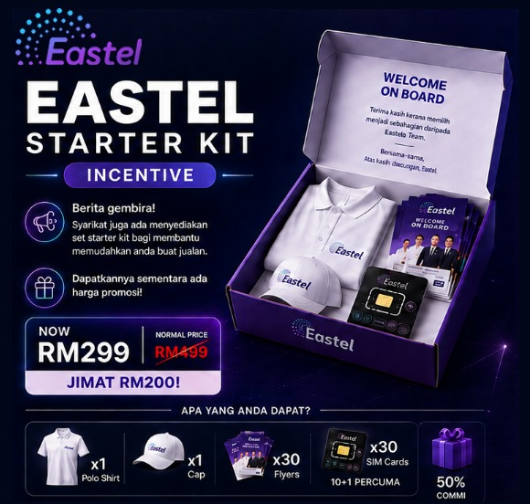
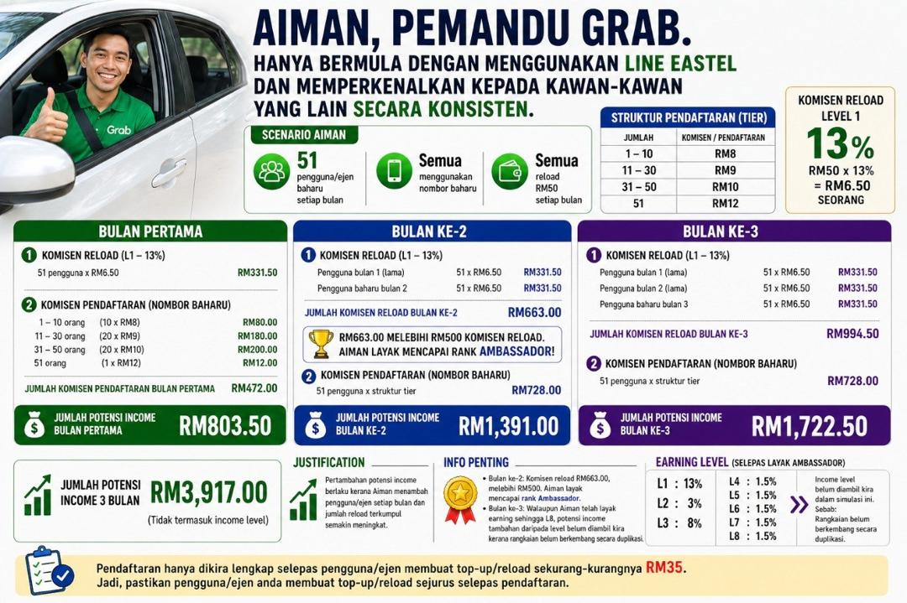

NSP
Sijil NSP
Individual Licence untuk network services di bawah Communications and Multimedia Act 1998.
Halaman ini mengolah semula maklumat utama daripada bahan Pelan Pemasaran Eastel supaya lebih mudah difahami dalam bentuk visual, ringkas dan tersusun.
Maklumat di halaman ini ialah penerangan ringkas untuk kefahaman umum. Terma, promosi dan struktur boleh berubah mengikut maklumat rasmi semasa Eastel.
Bahagian ini menghimpunkan rujukan utama berkaitan lesen dan pematuhan untuk bantu penerangan dibuat dengan lebih yakin dan bertanggungjawab.

Individual Licence untuk network services di bawah Communications and Multimedia Act 1998.

Pendaftaran sebagai pemegang lesen kelas pemberi perkhidmatan aplikasi.

Certificate of Shariah Compliance untuk Eastel Membership Programme.
Fokus utama ialah memahami saiz pasaran prepaid dan kenapa produk telco mudah diterangkan kepada orang ramai.

Gambaran pasaran telco semasa untuk bantu korang faham peluang pengguna prepaid.
Prepaid dekat dengan pengguna harian kerana ramai orang mahu kawal belanja telco.
Produk telco bukan sekali guna. Pengguna perlu terus reload untuk kekal aktif.
Internet, app dan komunikasi harian menjadikan line telco mudah difahami.
RM10 bukan cerita pulangan; ia ialah kos mula untuk kenal produk, cuba penggunaan dan bina keyakinan sebelum berkongsi.
Mula kenal produk tanpa cerita yang berat.
Line dan data memang orang guna setiap bulan.
Prospek faham lebih cepat kerana produk dekat dengan hidup.

Laluan rank disusun supaya korang nampak fokus setiap peringkat dengan lebih jelas.
L1 13% • L2 3% • L3 8%
Fokus: bina pengguna aktif awal.
1.5% setiap level.
Milestone: RM500 komisen reload.
1% setiap level.
Milestone: RM3,500 komisen reload.
Milestone: RM15,000 + syarat rank.
Fokus: expansion dan leadership.
| Tier | New Number | MNP |
|---|---|---|
| 1-10 | RM8 | RM13 |
| 11-30 | RM9 | RM14 |
| 31-50 | RM10 | RM15 |
| 51-100 | RM11 | RM17 |
| 101+ | RM13 | RM20 |

RM299 promo, 30 SIM, 30 flyers, polo, cap dan insentif L1/L2/L3. Detail penuh ada di page ESK.
Lihat ESK BoosterScenario ini menunjukkan bagaimana pengguna aktif, reload dan follow-up boleh membentuk progression yang lebih jelas.

Infografik utama Scenario Aiman.
Pengalaman produk memudahkan cerita. Pengguna aktif lebih penting daripada daftar kosong. Reload dan follow-up ialah kunci. Konsisten 3 bulan lebih penting daripada semangat 3 hari.
Semua angka, contoh dan simulasi adalah untuk kefahaman struktur. Hasil sebenar tidak dijanjikan dan bergantung kepada aktiviti, reload pengguna, struktur jaringan serta terma semasa Eastel.